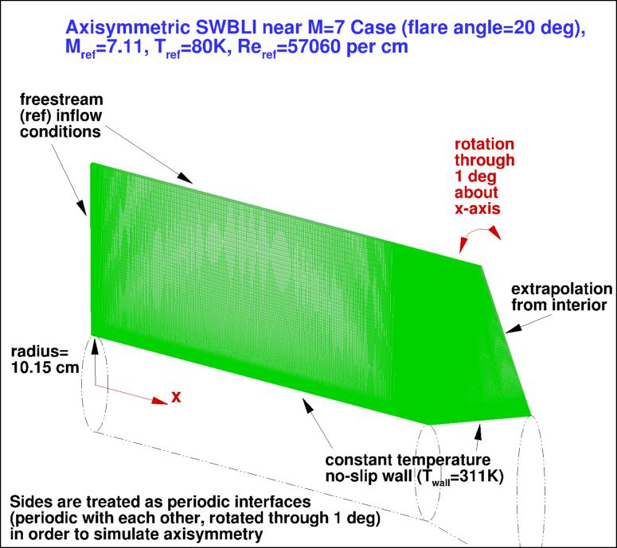
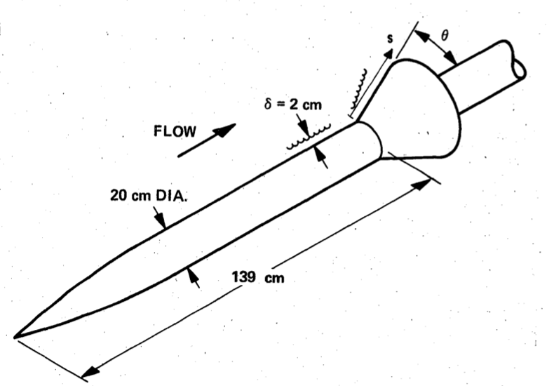
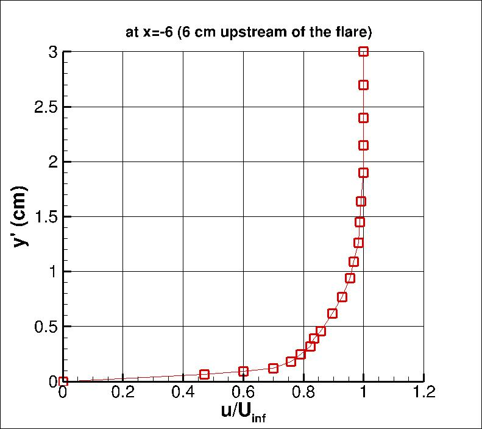
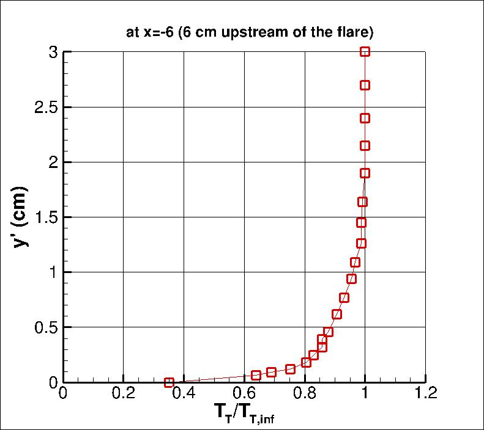
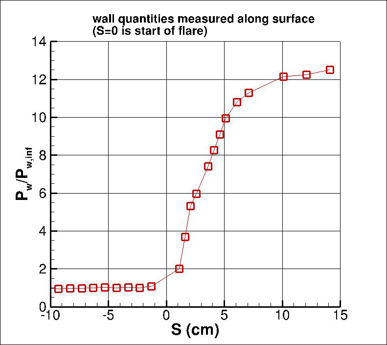
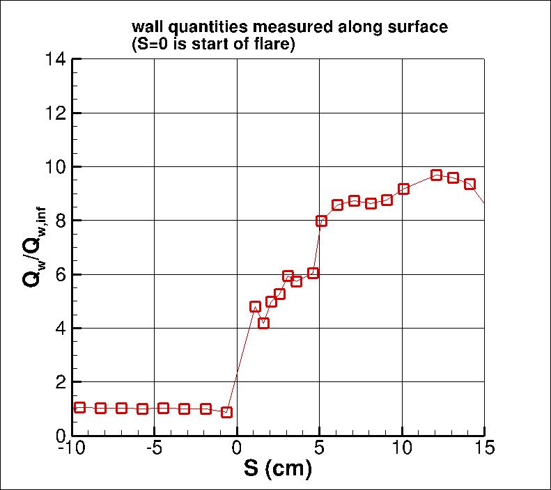

|
Langley Research CenterTurbulence Modeling Resource |
Return to: Turbulence Modeling Resource Home Page
ASWBLI: Axisymmetric Shock Wave Boundary Layer Interaction near M=7
The purpose here is to provide a
validation case for turbulence models. Unlike verification, which seeks to
establish that a model has been implemented correctly, validation compares
CFD results against data in an effort to establish a model's ability to
reproduce physics. A large sequence of nested grids of the same family are
provided here if desired. Data are also provided for comparison. For this
particular axisymmetric shock wave boundary layer interaction (SWBLI) case, the data are from experiment.
The experiment involved a cone / ogive cylinder forebody with flares of varying angles (20 to 35 degrees).
The current case has a flare angle of 20 degrees. The leading edge is a 10 degree cone that transitions via a circular
arc to a constant area cylinder with radius approximately 10.15 cm.
The flare (designed to produce an oblique shock and SWBLI) is located
139 cm downstream of the leading edge. The turbulent boundary layer upstream of the flare is
approximately 2 cm thick. As described in Georgiadis et al (AIAA Paper 2015-0316, January 2015,
https://doi.org/10.2514/6.2015-0316),
the leading edge can be excluded from the CFD calculation, provided that the inflow location and boundary conditions are
adjusted slightly (for example, Mach number is changed from 7.05 to 7.11); this is done here.
The inflow location is placed at x = -78.39 cm.
The wall (cylinder and flare) use no-slip BCs at constant temperature of 311 K.
The boundary conditions are delineated in the figure below.
It is important to note that this axisymmetric case is not a 2-D computation; it uses a
periodic (rotated) grid system with appropriate boundary conditions on the periodic sides of the grid.
Note: at high Mach numbers (e.g., M > 2), CFD transition to fully turbulent wall-bounded flow can be delayed
compared with flow at lower M. Also, the delayed transition location can vary significantly with
the freestream levels set. See, for example, Journal of Spacecraft and Rockets, Vol. 47, No. 1, 2010, pp. 11-20 and
AIAA Journal, Vol. 47, No. 4, 2009, pp. 982-993 (which is based on
AIAA Paper 2008-4403).
For this test case, results are only plotted for regions of the flow that were fully turbulent.

The experiment was performed by Kussoy and Horstman; the data reference is:
The geometry layout from the experiment is shown in the following figure.

Note: The above figure has rounded the cylinder diameter dimension to 20 cm; this validation case uses 20.3 cm, as per
NASA TM 101075.
The experimental data used here consists of some upstream profiles, along with wall pressures and wall heat transfer over the body.
The quantity y' indicates the vertical distance from the cylinder surface.
The quantity "S" is measured along the wall surface, with S=0 located at the start of the flare.
The definition of wall heat transfer Qw is: Qw=-k (dT/dy)w, where k is the thermal conductivity of the fluid.
Note that the normalizing infinity ("inf") values are taken upstream of the interaction region, here assumed
to be outside the boundary layer at x=S=-6 cm, but not beyond the shock layer that originates from the inflow of the domain.




The experimental data are provided here:
What to Expect:
(Other turbulence model results may be added in the future.)
Note that the OVERFLOW code has documented its results for this validation case (for the SA-noft2 and SST-V
turbulence models) in NAS Technical Paper 2016-01 (pdf file)
(18.3 MB) by Jespersen, Pulliam, and Childs.
Return to: Turbulence Modeling Resource Home Page
Recent significant updates: Responsible NASA Official:
Ethan Vogel
RESULTS
LINK TO EQUATIONS
MRR Level
SA
SA eqns
4
SST-Vm
SST-Vm eqns
3
k-e-Rt
k-e-Rt eqns
1
03/21/2023 - mentioned possible delay in transition to fully turbulent flow at higher M
12/09/2021 - radius stated as 10.15 cm (more digits than the original 10 cm); mention of inflow location added
08/28/2020 - changed SST-V naming to SST-Vm
Page Curator:
Clark Pederson
Last Updated: 03/21/2023